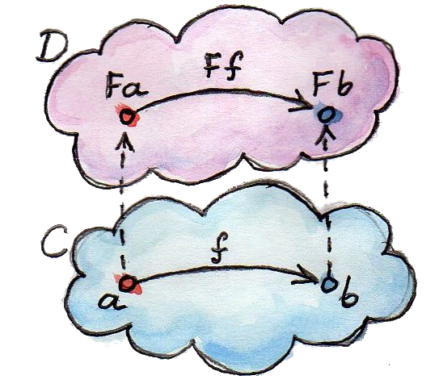
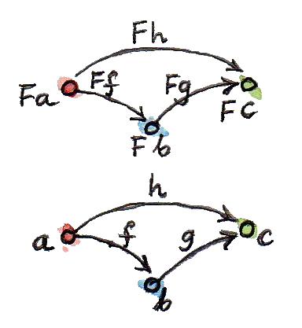
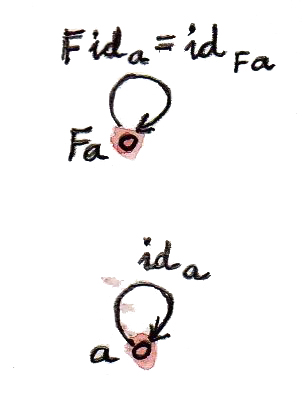
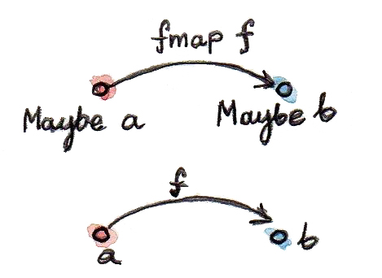

冒着像坏掉的唱片一样重复的风险，我还是要说：函子是一个非常简单却强大的想法。范畴论里到处都是这样的想法。函子是范畴之间的映射。给定两个范畴 C 与 D，函子 F 把 C 中的对象映射到 D 中的对象——它是对象上的函数。若 a 是 C 中的对象，我们把它在 D 中的像写成 F a（不用括号）。但范畴不只有对象，还包括连接对象的态射。函子也映射态射——它还是态射上的函数。不过它不会随意映射态射，而会保持连接关系。
因此，若 C 中的态射 f 连接对象 a 与 b：
f 在 D 中的像 F f 会连接 a 与 b 的像：
（这里混合了数学与 Haskell 记法，希望到现在已经容易理解。函子作用于对象或态射时，我不写括号。）

函子保持范畴的结构：一个范畴中相连的东西，在另一个范畴中仍然相连。但范畴结构还包括态射复合。若 h 是 f 与 g 的复合：
我们要求它在 F 下的像等于 f 与 g 的像的复合：

最后，还要求 C 中所有恒等态射都映射成 D 中的恒等态射：
这里，ida 是对象 a 上的恒等态射，idF a 是 F a 上的恒等态射。

这些条件使函子比普通函数受限得多。函子必须保持范畴结构。若把范畴想成由态射网络维系的一组对象，函子不允许撕裂这张织物。它可以把对象压在一起，也可以把多个态射粘成一个，但绝不能把东西拆散。这种“不可撕裂”的约束类似微积分中的连续性条件。从这个意义说，函子是“连续的”（不过还存在一种限制更强的函子连续性概念）。和函数一样，函子既可以折叠，也可以嵌入。当源范畴远小于目标范畴时，嵌入的一面更明显。极端情况下，源可以是平凡的单元素范畴——只有一个对象和一个态射（恒等态射）。从单元素范畴到任意其他范畴的函子，只是在那个范畴中选出一个对象。这完全类似从单元素集合出发的态射会选出目标集合中的元素。折叠程度最大的函子称为常函子 Δc。它把源范畴中的每个对象都映射到目标范畴中选定的对象 c，也把源中的每个态射都映射到恒等态射 idc。它像一个黑洞，把一切压缩到一个奇点。讨论极限与余极限时，我们会更多地见到它。
编程中的函子
回到现实，谈谈编程。我们有类型与函数构成的范畴。可以讨论把这个范畴映射到自身的函子——这种函子称为自函子。那么类型范畴中的自函子是什么？首先，它把类型映射到类型。我们已经见过这类映射，只是可能没有意识到：由其他类型参数化的类型定义就是例子。
Maybe 函子
Maybe 的定义是从类型 a 到类型 Maybe a 的映射：
data Maybe a = Nothing | Just a这里有个重要细节：Maybe 本身不是类型，而是类型构造器。必须给它一个类型参数，例如 Int 或 Bool，它才成为类型。不带参数的 Maybe 表示类型上的函数。但能否把 Maybe 变成函子？（以后在编程语境中说函子，我几乎总是指自函子。）函子不仅映射对象（这里是类型），也映射态射（这里是函数）。对于任意从 a 到 b 的函数：
f :: a -> b我们希望产生从 Maybe a 到 Maybe b 的函数。定义它需要处理与 Maybe 两个构造器对应的两种情况。Nothing 很简单：仍返回 Nothing。若参数是 Just，则对其中内容应用 f。因此 f 在 Maybe 下的像是：
f' :: Maybe a -> Maybe b
f' Nothing = Nothing
f' (Just x) = Just (f x)（顺便一提，Haskell 允许变量名中使用撇号，这在此类场景中很方便。）在 Haskell 中，函子映射态射的部分实现为一个名叫 fmap 的高阶函数。对 Maybe 而言，它的签名是：
fmap :: (a -> b) -> (Maybe a -> Maybe b)
我们常说 fmap 提升了一个函数，提升后的函数作用于 Maybe 值。照例，由于柯里化，这个签名可有两种解释：接受一个本身为函数的参数 (a -> b)，返回函数 (Maybe a -> Maybe b)；或接受两个参数并返回 Maybe b：
fmap :: (a -> b) -> Maybe a -> Maybe b根据前面的讨论，Maybe 的 fmap 实现如下：
fmap _ Nothing = Nothing
fmap f (Just x) = Just (f x)要证明类型构造器 Maybe 与函数 fmap 共同构成函子，必须证明 fmap 保持恒等与复合。这些条件称为“函子定律”，其实只是保证范畴结构不被破坏。
等式推理
为了证明函子定律，我会使用等式推理，这是 Haskell 中常见的证明技巧。它利用 Haskell 函数以等式定义这一事实：左边等于右边，因而可以随时互相替换；必要时重命名变量以避免冲突。可以把它看成内联函数，或反过来把表达式重构成函数。以恒等函数为例：
id x = x若在表达式中看到 id y，可以把它换成 y（内联）。若看到 id 作用于表达式，例如 id (y + 2)，也可换成表达式本身 (y + 2)。替换还能反向进行：任何表达式 e 都能换成 id e（重构）。若函数通过模式匹配定义，每条子定义都可以独立使用。比如根据上面的 fmap 定义，可以把 fmap f Nothing 换成 Nothing，也可反过来。下面看实际证明。先证明保持恒等：
fmap id = id需要考虑 Nothing 与 Just 两种情况。第一种如下（用 Haskell 伪代码把左边变成右边）：
fmap id Nothing
= { fmap 的定义 }
Nothing
= { id 的定义 }
id Nothing最后一步反向使用了 id 的定义，把 Nothing 替换成 id Nothing。实践中，这类证明常从两头同时推进，直到在中间遇到同一个表达式；这里就是 Nothing。第二种情况同样容易：
fmap id (Just x)
= { fmap 的定义 }
Just (id x)
= { id 的定义 }
Just x
= { id 的定义 }
id (Just x)现在证明 fmap 保持复合：
fmap (g . f) = fmap g . fmap f先看 Nothing：
fmap (g . f) Nothing
= { fmap 的定义 }
Nothing
= { fmap 的定义 }
fmap g Nothing
= { fmap 的定义 }
fmap g (fmap f Nothing)再看 Just：
fmap (g . f) (Just x)
= { fmap 的定义 }
Just ((g . f) x)
= { 复合的定义 }
Just (g (f x))
= { fmap 的定义 }
fmap g (Just (f x))
= { fmap 的定义 }
fmap g (fmap f (Just x))
= { 复合的定义 }
(fmap g . fmap f) (Just x)必须强调，等式推理不适用于带副作用的 C++ 式“函数”。考虑：
int square(int x) {
return x * x;
}
int counter() {
static int c = 0;
return c++;
}
double y = square(counter());若使用等式推理，可以内联 square 得到：
double y = counter() * counter();这显然不是有效变换，也不会产生相同结果。尽管如此，若把 square 实现为宏，C++ 编译器仍会尝试做这种等式推理，并造成灾难性结果。
Optional
函子在 Haskell 中很容易表达，但任何支持泛型编程和高阶函数的语言都能定义它。考虑 C++ 中与 Maybe 对应的模板类型 optional。下面是实现草图（实际实现复杂得多，需要处理参数传递方式、复制语义和 C++ 特有的资源管理问题）：
template<typename T>
class optional {
bool _isValid; // 标签
T _v;
public:
optional() : _isValid(false) {} // Nothing
optional(T x) : _isValid(true) , _v(x) {} // Just
bool isValid() const { return _isValid; }
T val() const { return _v; }
};这个模板给出了函子定义的一部分：类型映射。它把任意类型 T 映射成新类型 optional<T>。再定义它对函数的作用：
template<typename A, typename B>
std::function<optional<B>(optional<A>)>
fmap(std::function<B(A)> f)
{
return [f](optional<A> opt) {
if (!opt.isValid())
return optional<B>{};
else
return optional<B>{ f(opt.val()) };
};
}这是一个高阶函数：接受函数并返回函数。它的非柯里化版本如下：
template<typename A, typename B>
optional<B> fmap(std::function<B(A)> f, optional<A> opt) {
if (!opt.isValid())
return optional<B>{};
else
return optional<B>{ f(opt.val()) };
}还可以把 fmap 做成 optional 的模板方法。选择太多，反而使 C++ 中抽象函子模式成为难题。函子应该是供继承的接口吗（遗憾的是，虚函数不能是模板）？应该是柯里化还是非柯里化的自由模板函数？C++ 编译器能正确推断缺失的类型，还是必须显式指定？假设输入函数 f 把 int 变成 bool，编译器如何确定 g 的类型：
auto g = fmap(f);尤其是未来有多个函子重载 fmap 时怎么办？（很快会看到更多函子。）
类型类
Haskell 怎样抽象函子？它使用类型类机制。类型类定义支持共同接口的一族类型。例如，支持相等判断的对象类定义为：
class Eq a where
(==) :: a -> a -> Bool这个定义说：若类型 a 支持运算符 (==)，它接受两个 a 类型参数并返回 Bool，那么 a 就属于 Eq 类。要告诉 Haskell 某种具体类型属于 Eq，必须把它声明为该类的一个实例，并提供 (==) 的实现。例如，给定二维 Point（两个 Float 的积类型）：
data Point = Pt Float Float可以这样定义点的相等：
instance Eq Point where
(Pt x y) == (Pt x' y') = x == x' && y == y'这里把正在定义的运算符 (==) 放在两个模式 (Pt x y) 与 (Pt x' y') 之间，以中缀形式使用；单个等号后是函数体。一旦 Point 被声明为 Eq 的实例，就能直接比较点是否相等。注意，与 C++ 或 Java 不同，定义 Point 时无需指定 Eq 类（或接口），以后可在客户端代码中补充。类型类也是 Haskell 重载函数（及运算符）的唯一机制。我们需要用它为不同函子重载 fmap。不过有个难点：函子不是一种类型，而是类型之间的映射，即类型构造器。我们需要的类型类并非像 Eq 那样是一族类型，而是一族类型构造器。幸运的是，Haskell 类型类既能处理类型，也能处理类型构造器。下面是 Functor 类：
class Functor f where
fmap :: (a -> b) -> f a -> f b它规定：若存在具有上述签名的函数 fmap，f 就是 Functor。小写 f 是类型变量，与 a、b 类似。不过编译器会根据其用法——像 f a、f b 那样作用于其他类型——推断它代表类型构造器而不是类型。因此，声明 Functor 实例时，必须给出类型构造器，例如 Maybe：
instance Functor Maybe where
fmap _ Nothing = Nothing
fmap f (Just x) = Just (f x)顺便说，Functor 类以及许多简单数据类型（包括 Maybe）的实例定义，都属于标准 Prelude 库。
C++ 中的函子
能否在 C++ 中采用同样的方法？类型构造器对应 optional 这样的类模板，因此类比之下，应以模板模板参数 F 参数化 fmap，语法如下：
template<template<typename> F, typename A, typename B>
F<B> fmap(std::function<B(A)>, F<A>);我们希望为不同函子特化这个模板。遗憾的是，C++ 禁止对函数模板做偏特化，不能写：
template<typename A, typename B>
optional<B> fmap<optional>(
std::function<B(A)> f, optional<A> opt)只能退回函数重载，这又回到了非柯里化 fmap 的原始定义：
template<typename A, typename B>
optional<B> fmap(std::function<B(A)> f, optional<A> opt)
{
if (!opt.isValid())
return optional<B>{};
else
return optional<B>{ f(opt.val()) };
}这个定义能够工作，只是因为 fmap 的第二个参数选择了重载。它完全无视更一般的 fmap 定义。
List 函子
要建立函子在编程中所扮演角色的直觉，还需更多例子。任何由另一类型参数化的类型都是函子候选。泛型容器由其存储的元素类型参数化，所以看看简单容器 list：
data List a = Nil | Cons a (List a)类型构造器 List 把任意类型 a 映射到 List a。为了证明 List 是函子，必须定义函数提升：给定 a -> b，定义 List a -> List b：
fmap :: (a -> b) -> (List a -> List b)作用于 List a 的函数要处理与两个列表构造器对应的两种情况。Nil 很简单：返回 Nil，空列表上没有多少事可做。Cons 稍复杂，因为涉及递归。先退一步看看目标：我们有一个 a 的列表、一个把 a 变成 b 的函数 f，想生成 b 的列表。显然应使用 f 把列表中每个元素从 a 变为 b。非空列表定义为表头与表尾的 Cons，所以实践中对表头应用 f，对表尾应用提升后的（经 fmap 的）f。这是递归定义，因为用提升后的 f 来定义提升后的 f：
fmap f (Cons x t) = Cons (f x) (fmap f t)右边的 fmap f 作用于比当前列表更短的列表——它的尾部。递归会走向越来越短的列表，最终必然到达空列表 Nil。前面已经决定，fmap f 作用于 Nil 返回 Nil，于是递归终止。最终用 Cons 构造器组合新表头 (f x) 与新表尾 (fmap f t)。合起来就是 list 函子的实例声明：
instance Functor List where
fmap _ Nil = Nil
fmap f (Cons x t) = Cons (f x) (fmap f t)若更熟悉 C++，可以考虑 std::vector，它可视为最通用的 C++ 容器。std::vector 的 fmap 只是在 std::transform 外薄薄封装一层：
template<typename A, typename B>
std::vector<B> fmap(std::function<B(A)> f, std::vector<A> v)
{
std::vector<B> w;
std::transform( std::begin(v)
, std::end(v)
, std::back_inserter(w)
, f);
return w;
}例如，可以用它平方一个数列中的元素：
std::vector<int> v{ 1, 2, 3, 4 };
auto w = fmap([](int i) { return i*i; }, v);
std::copy( std::begin(w)
, std::end(w)
, std::ostream_iterator(std::cout, ", "));多数 C++ 容器都实现了可传给 std::transform 的迭代器，因此都是函子；std::transform 是 fmap 更原始的近亲。遗憾的是，函子的简洁性淹没在迭代器和临时对象的惯常杂乱中（见上面的 fmap 实现）。令我欣慰的是，新提议的 C++ ranges 库让 range 的函子性质明显得多。
Reader 函子
现在你或许形成了一些直觉，例如函子是某种容器。下面看一个乍看完全不同的例子：把类型 a 映射到“返回 a 的函数”的类型。我们还未深入讨论函数类型——完整的范畴论处理即将到来——但作为程序员已有一定理解。在 Haskell 中，函数类型使用箭头类型构造器 (->) 构造，它接受参数类型与结果类型两个类型。你已经见过中缀形式 a -> b；加上括号，也能以前缀形式使用：
(->) a b和普通函数一样，多参数类型函数也可偏应用。只给箭头一个类型参数时，它还在等待另一个。因此：
(->) a是类型构造器。还需要另一个类型 b，才能产生完整类型 a -> b。它本身定义了一整族由 a 参数化的类型构造器。看看这是否也是一族函子。两个类型参数容易混淆，所以重命名：按照此前函子定义，把参数类型叫 r，结果类型叫 a。我们的类型构造器接受任意类型 a，把它映射到 r -> a。要证明它是函子，需要把函数 a -> b 提升为这样的函数：接受 r -> a，返回 r -> b。这两个类型分别是类型构造器 (->) r 作用于 a 与 b 的结果。此时 fmap 的类型签名是：
fmap :: (a -> b) -> (r -> a) -> (r -> b)我们要解这个谜题：给定 f :: a -> b 与 g :: r -> a，构造 r -> b。两个函数只有一种复合方式，而结果恰好就是所需。因此 fmap 实现为：
instance Functor ((->) r) where
fmap f g = f . g它就这样成立了！若喜欢简洁记法，可以注意复合也能写成前缀形式，从而进一步缩短定义：
fmap f g = (.) f g再省略参数，得到两个函数的直接等式：
fmap = (.)类型构造器 (->) r 与上述 fmap 实现的组合，称为 Reader 函子。
作为容器的函子
我们已经看到一些编程语言中的函子：它们定义通用容器，或至少定义包含某个值的对象，而值的类型正是函子的参数。Reader 函子看起来像异类，因为我们不把函数当成数据。但纯函数可以被记忆化，函数执行也能变成查表，而表就是数据。反过来，由于 Haskell 的惰性，列表等传统容器实际上也可能实现为函数。例如，自然数的无穷列表可简洁定义为：
nats :: [Integer]
nats = [1..]第一行的一对方括号是 Haskell 内建的列表类型构造器；第二行的方括号用于创建列表字面量。显然，这样的无穷列表无法存进内存。编译器把它实现成按需生成 Integer 的函数。Haskell 实际上模糊了数据与代码的边界：列表可视为函数，函数也可视为从参数映射到结果的表。若函数定义域有限且不太大，后一种看法甚至很实用。不过把 strlen 实现为查表就不现实，因为不同字符串有无穷多个。程序员不喜欢无穷，但在范畴论中，你得把无穷当早餐吃。无论全体字符串构成的集合，还是宇宙过去、现在和未来的所有可能状态，我们都能处理！因此，我愿把函子对象（由自函子生成的类型的对象）看成含有其参数类型的一个或多个值，即便那些值并没有实际存在其中。C++ 的 std::future 就是函子的一例：未来某时它可能包含一个值，但并无保证；访问它时可能阻塞，等待另一线程完成。另一个例子是 Haskell 的 IO 对象，它也许包含用户输入，或包含显示器上出现“Hello World!”的未来宇宙版本。按照这种解释，函子对象可能包含其参数类型的一个或多个值，也可能包含生成这些值的配方。我们根本不关心能否访问这些值——那完全是可选的，也不在函子的职责范围内。我们只关心能否用函数操纵这些值。若可以访问值，就应能看到操纵结果；若不能，我们只关心操纵能正确复合，而且用恒等函数操纵不会改变任何东西。为了说明我们多么不在乎能否访问函子对象中的值，来看一个完全忽略参数 a 的类型构造器：
data Const c a = Const cConst 类型构造器接受两个类型 c 与 a。和处理箭头构造器一样，我们偏应用它来构造函子。数据构造器（也叫 Const）只接受一个 c 类型的值，完全不依赖 a。该类型构造器的 fmap 类型是：
fmap :: (a -> b) -> Const c a -> Const c b由于函子忽略类型参数，fmap 实现可以随意忽略函数参数——函数根本没有作用对象：
instance Functor (Const c) where
fmap _ (Const v) = Const vC++ 中也许更清楚（没想到我会说这句话！），因为它更明确地区分编译期的类型参数与运行期的值：
template<typename C, typename A>
struct Const {
Const(C v) : _v(v) {}
C _v;
};C++ 的 fmap 实现同样忽略函数参数，本质上只重新转换 Const 参数的类型而不改变其值：
template<typename C, typename A, typename B>
Const<C, B> fmap(std::function<B(A)> f, Const<C, A> c) {
return Const<C, B>{c._v};
}尽管古怪，Const 函子在许多构造中都扮演重要角色。在范畴论里，它是前面提到的 Δc 函子的特例——自函子版的黑洞。以后还会见到它。
函子复合
不难相信，范畴之间的函子像集合之间的函数一样可以复合。两个函子的复合作用于对象时，就是各自对象映射的复合；作用于态射时也一样。连续穿过两个函子后，恒等态射仍成为恒等态射，态射复合仍成为态射复合。没有太多玄机。尤其是，自函子很容易复合。还记得 maybeTail 吗？用 Haskell 内建列表实现重写如下：
maybeTail :: [a] -> Maybe [a]
maybeTail [] = Nothing
maybeTail (x:xs) = Just xs（原先叫 Nil 的空列表构造器换成空方括号 []；Cons 构造器换成中缀运算符 :。）maybeTail 的结果类型，是函子 Maybe 与 [] 作用于 a 后的复合。两个函子各有自己的 fmap；但若想把函数 f 应用于这个复合结构——一个 Maybe 列表——内部的内容呢？必须穿过两层函子。可以用 fmap 穿过外层 Maybe，但不能直接把 f 送进 Maybe，因为 f 不作用于列表。必须送入 (fmap f)，让它作用于内层列表。例如，下面平方 Maybe 整数列表中的元素：
square x = x * x
mis :: Maybe [Int]
mis = Just [1, 2, 3]
mis2 = fmap (fmap square) mis编译器分析类型后，会确定外层 fmap 应使用 Maybe 实例的实现，内层则使用 list 函子的实现。上面代码还可以写成：
mis2 = (fmap . fmap) square mis这或许不那么直观。但记住，fmap 可以视为单参数函数：
fmap :: (a -> b) -> (f a -> f b)在这里，(fmap . fmap) 中第二个 fmap 的参数是：
square :: Int -> Int它返回以下类型的函数：
[Int] -> [Int]第一个 fmap 再接受这个函数，返回：
Maybe [Int] -> Maybe [Int]最后把该函数应用到 mis。回到范畴论：函子复合显然满足结合律（对象映射结合，态射映射也结合）。每个范畴还有一个平凡的恒等函子，把每个对象和每个态射都映射到自身。因此，函子具有某个范畴中的态射所拥有的全部性质。但那是什么范畴？它的对象必须是范畴，态射必须是函子，也就是“范畴的范畴”。不过，全体范畴组成的范畴必须包含自身，这会落入与“全体集合的集合”相同的悖论。好在存在由全体小范畴组成的范畴 Cat（它本身很大，所以不能成为自己的成员）。小范畴是对象构成集合、而不是某种比集合更大的东西的范畴。要注意，在范畴论中，即使不可数无穷集合也算“小”。我提到这些，是因为在多层抽象中不断辨认出相同结构，实在令人惊叹。以后会看到，函子本身也构成范畴。
习题
- 能否通过下面的定义把
Maybe类型构造器变成函子？
它忽略两个参数。（提示：检查函子定律。）fmap _ _ = Nothing点击展开参考答案
不能。恒等律要求
fmap id = id，但对Just x，左边得到Nothing，右边得到Just x。除非整个类型只有Nothing，否则定律不成立。 - 证明 Reader 函子的函子定律。提示：真的很简单。
点击展开参考答案
Reader 的
fmap就是函数复合：fmap f g = f . g。所以fmap id g = id . g = g；并且fmap (f . h) g = (f . h) . g = f . (h . g) = fmap f (fmap h g)。两条定律分别来自恒等律和结合律。 - 用你第二喜欢的语言实现 Reader 函子（第一喜欢的当然是 Haskell）。
点击展开参考答案
fun <R, A, B> readerMap( f: (A) -> B, reader: (R) -> A ): (R) -> B = { r -> f(reader(r)) }它并不读取或复制环境
R，只是把reader产生的A交给f。 - 证明 list 函子的函子定律。假设定律对当前列表的尾部成立（换句话说，使用归纳法）。
点击展开参考答案
空列表上两条定律都由
fmap _ Nil = Nil直接成立。归纳步：假设定律对尾部xs成立。恒等律有fmap id (Cons x xs) = Cons (id x) (fmap id xs) = Cons x xs。复合律两边的表头都为g (f x)；根据归纳假设，表尾分别为fmap (g.f) xs与fmap g (fmap f xs)，二者相等。因此定律对整条有限列表成立。